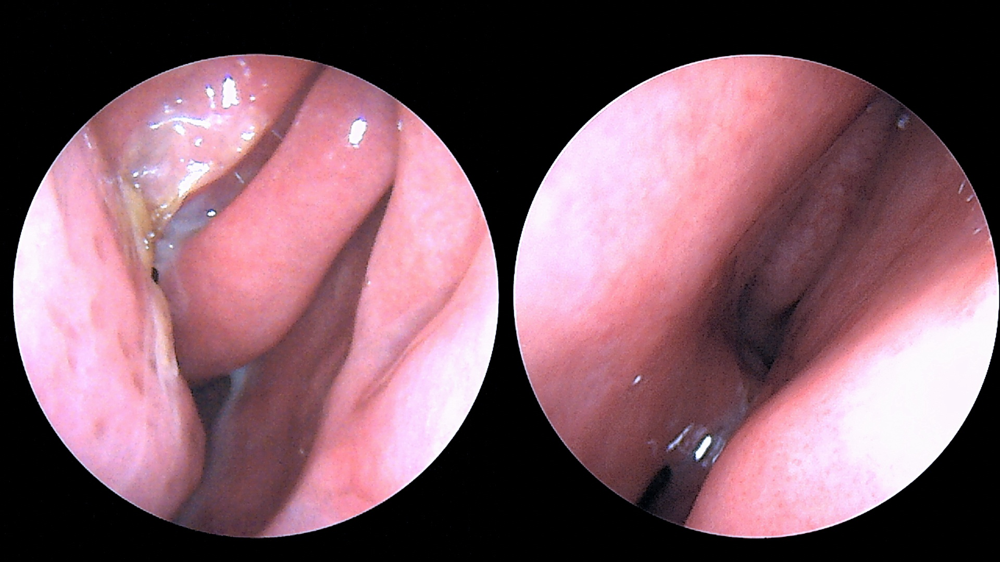
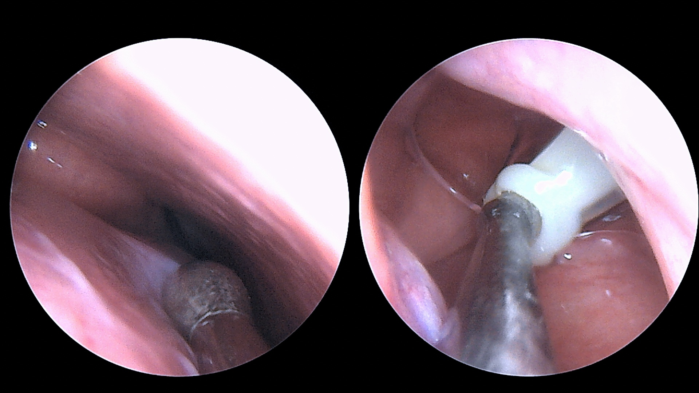

These are things we often hear in the clinic at this time of year: “My cold seems to be over, but I have had yellow discharge and a blocked nose for two weeks.” “My cheeks and forehead feel heavy, and it hurts more when I bend my head forward.” “I can hardly smell anything and something keeps running down the back of my throat. Is it sinusitis?”
Many people are worried when nasal symptoms linger after a cold has passed.
In short, most nasal symptoms after a cold are caused by viruses and get better on their own. Sinusitis should be suspected when the timing and course fit:
- Yellow nasal discharge together with nasal blockage or facial pain or pressure that has not improved more than 10 days after the cold began
- Symptoms that were getting better but worsen again within 10 days (a second worsening)
- If these symptoms continue for 12 weeks or more, chronic sinusitis is suspected
- Swelling or redness around the eye
- The eye seems to bulge forward, or you see double
- Vision drops, or it is hard to move the eye
- Swelling of the forehead, or a severe headache unlike any you have had before
- A stiff neck, or a change in consciousness such as confusion
In this article 7 sections · 7 min read
1. What is sinusitis? Inflammation of the sinuses
The sinuses are air-filled spaces in the facial bones around the nose, connected to the nose by small passages.
When a cold or allergy swells and blocks these passages, secretions cannot drain and build up, and inflammation develops. This is sinusitis. In Korean, it is commonly called “축농증” (chuknongjeung).
When you catch a cold, mild inflammation of the sinuses commonly develops too. So yellow discharge during the first few days of a cold does not by itself mean bacterial sinusitis. The colour of nasal discharge alone cannot tell you whether there is a bacterial infection.
2. Symptoms of sinusitis: more than just the nose
- Yellow nasal discharge and a blocked nose
- Mucus running down the back of the throat (postnasal drip) and the cough it causes (it can be worse when lying down)
- A heavy or aching feeling in the cheeks, forehead or between the eyes, and pressure that worsens when you bend your head forward
- A reduced sense of smell, or an unpleasant smell from the nose or mouth
- A feeling of pain in the upper teeth (the sinus in the upper jaw is close to the roots of the upper teeth; a problem with the tooth itself is told apart by examination)
- A blocked feeling in the ears, a sore throat and tiredness
Fever is common early in a cold, so fever alone is not used to decide whether it is bacterial sinusitis.
Sinusitis itself is not contagious. However, the cold virus that started it can be passed on, so wash your hands and cover your coughs when you have cold symptoms.
3. What it looks like on a real nasal endoscopy
Nasal endoscopy is an examination in which a thin camera is passed through the nostril to look directly inside the nose. It can be done during an outpatient visit.


With an endoscope we can check where the pus is coming from, how swollen the inside of the nose is, and whether there are polyps. In particular, lingering nasal symptoms are not judged from symptoms alone; confirming inflammation by examination, nasal endoscopy and, if needed, CT is the basis of diagnosis.
4. How is acute sinusitis treated?
Controlling symptoms
- Saline nasal irrigation, a nasal steroid spray and pain relievers can be used to ease symptoms in both viral and bacterial sinusitis.
Do you need to take antibiotics right away?
- The 2025 AAO-HNSF guideline recommends offering watchful waiting without antibiotics to adults with uncomplicated acute bacterial sinusitis when follow-up is assured.
- After discussing the plan with your clinician, watchful waiting is usually for 3–5 days after diagnosis, but the timing depends on how long you have already been ill and your individual condition. Seek reassessment sooner if symptoms worsen; if there is no improvement by the agreed review time, your clinician will reassess whether antibiotics are needed.
- If your immunity is weak or complications are suspected, whether to use antibiotics from the start is decided according to your individual situation.
If you use nasal irrigation
- Use sterile saline made for nasal rinsing, or make the solution with distilled water, sterile water, or water that has been boiled and cooled. Do not use untreated tap water, and wash and dry the rinsing device after use.
Decongestant nasal sprays (vasoconstrictors) can cause rhinitis medicamentosa, in which the nose becomes even more blocked, if used continuously for more than a few days, so they are not used for long. See also choosing a nasal spray for a blocked nose.
5. Do I need a CT scan?
Acute sinusitis that meets the criteria is diagnosed from symptoms and examination, and imaging is not recommended unless complications or another disease are suspected.
Examples of when a CT may be considered
- When complications involving the eye or head are suspected
- When foul-smelling discharge continues from one side of the nose only (to distinguish, for example, sinusitis caused by a tooth)
- When symptoms last 12 weeks or more, to confirm chronic sinusitis or to discuss surgery
6. Long-lasting nasal symptoms: could it be chronic sinusitis?
Chronic sinusitis is suspected when at least two of the following symptoms last for 12 weeks or more: nasal blockage, nasal discharge (from the front of the nose or down the back of the throat), facial pressure, or a reduced sense of smell. At least one of the symptoms must be nasal blockage or nasal discharge. At this point the diagnosis is not made from symptoms alone; inflammation is confirmed objectively by examination, nasal endoscopy or CT.
- The direction of treatment differs depending on whether nasal polyps are present.
- The basic treatment is saline irrigation and a nasal steroid.
- Accompanying conditions such as asthma and weakened immunity are also checked.
- If medication does not help enough, the next steps, such as surgery, are discussed.
If bloody or foul-smelling discharge continues from one side of the nose only, an examination is needed to look for a tooth problem or another cause. See also sinusitis, nasal endoscopy and postnasal drip and headaches that come from the nose.
- Most nasal symptoms after a cold get better on their own. The colour of nasal discharge alone does not tell you whether there is a bacterial infection.
- If symptoms have not improved after more than 10 days, or get better and then worse again, acute sinusitis is suspected.
- Adults with no complications who can return for a follow-up visit can, after discussing it with a clinician, usually wait 3–5 days after diagnosis without antibiotics, and should see the doctor again if symptoms worsen or do not improve.
- If symptoms last 12 weeks or more, chronic sinusitis is suspected and is diagnosed by confirming inflammation with examination, nasal endoscopy or CT.
- Swelling around the eye or changes in vision need immediate hospital assessment; confusion or seizures need a call to 119.
If a blocked nose and yellow discharge last a long time after a cold, check the 10-day and 12-week criteria and the warning signs above first.
References
- Payne SC, et al. Clinical Practice Guideline: Adult Sinusitis Update. Otolaryngol Head Neck Surg. 2025. PubMed (full text: doi.org/10.1002/ohn.1344; summary of recommendations: AAO-HNSF summary guide)
- Fokkens WJ, et al. European Position Paper on Rhinosinusitis and Nasal Polyps 2020 (EPOS 2020). Rhinology. 2020. PubMed
- Korea Disease Control and Prevention Agency. 2026 Practice Guideline for the Appropriate Use of Antibiotics in Acute Upper Respiratory Tract Infection (Korean adults aged 19 and over, hospital-level institutions and above). KDCA; Official guideline PDF (Korean)
- U.S. FDA. Is Rinsing Your Sinuses With Neti Pots Safe? fda.gov
- Zucker SM, et al. Management of Rhinitis Medicamentosa: A Systematic Review. Otolaryngol Head Neck Surg. 2019. PubMed
This article is an English adaptation of a Korean post by Dr. OH JUNGHO. It is general health information, not a diagnosis or treatment plan. The criteria described are for adults; for children, talk to a doctor.